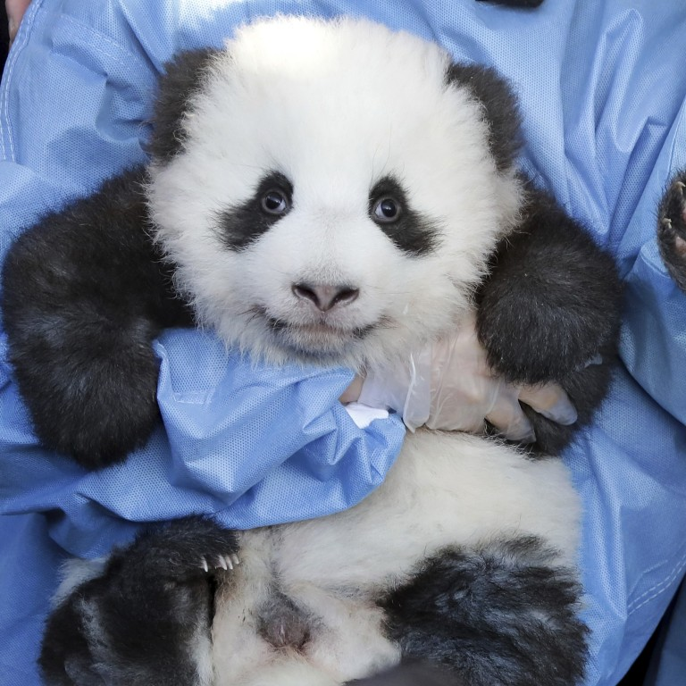

Giant panda

The GIANT panda (Ailuropoda melanoleuca; Chinese: 大熊猫; pinyin: dàxióngmāo), also known as the panda bear or simply the panda, is a bear native to south central China. It is characterised by large, black patches around its eyes, over the ears, and across its round body.

Here is a giant panda at the Ocean Park Hong Kong
The name "giant panda" is sometimes used to distinguish it from the red panda, a neighboring musteloid.
Though it belongs to the order Carnivora, the giant panda is a folivore, with bamboo shoots and leaves making up more than 99% of its diet. Giant pandas in the wild will occasionally eat other grasses, wild tubers, or even meat in the form of birds, rodents, or carrion.
In captivity, they may receive honey, eggs, fish, yams, shrub leaves, oranges, or bananas along with specially prepared food.
| Pandor, är | väldigt, VÄLDIGT | fina, djur |
| Björnar, är | väldigt, VÄLDIGT | fula, djur |
Panda cubs
Here is a panda cub
In zoos
Pandas have been kept in zoos as early as the Western Han Dynasty in China, where the writer Sima Xiangru noted that the panda was the most treasured animal in the emperor's garden of exotic animals in the capital Chang'an (present Xi'an). Not until the 1950s were pandas again recorded to have been exhibited in China's zoos.
Below is a panda table

Diet
Despite its taxonomic classification as a carnivoran, the giant panda's diet is primarily herbivorous, consisting almost exclusively of bamboo. However, the giant panda still has the digestive system of a carnivore, as well as carnivore-specific genes, and thus derives little energy and little protein from consumption of bamboo. Its ability to digest cellulose is ascribed to the microbes in its gut. Pandas are born with sterile intestines and require bacteria obtained from their mother's feces to digest vegetation. The giant panda is a highly specialised animal with unique adaptations, and has lived in bamboo forests for millions of years